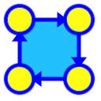

JForlan is a Java program for creating and editing Forlan automata and trees: finite automata, regular expression finite automata, parse trees, regular expression trees, and program trees. JForlan automatically maintains the connections between the components of automata and trees, as those components are repositioned using the mouse. And it handles the conversion of diagrams from and to Forlan's concrete syntax. JForlan can be invoked directly (as a standalone application) or from Forlan.
JForlan requires JRE (Java Runtime Environment) to be installed, which can be downloaded for free from www.java.com. Version 1.8 or later of JRE is required. Forlan itself must be installed separately.
Download the compressed tarball jforlan.tgz. Uncompress and untar it, letting Archive Utility do it, or running the commands
gunzip jforlan.tgz tar xf jforlan.tar
Change directory to the resulting directory, jforlan. Move JForlan.app to /Applications. Move jforlan to /usr/local/bin, or some other directory that's on the shell's search path.
Download the compressed tarball jforlan.tgz. Uncompress and untar it by running the commands
gunzip jforlan.tgz tar xf jforlan.tar
Change directory to the resulting directory, jforlan. Move JForlan.jar to some permanent directory (e.g., /usr/local/bin/.jar, which you'll first have to create), and edit jforlan so that the variable jardir is set to the directory where JForlan.jar is located. Move jforlan to a directory that's on the shell's search path, e.g., /usr/local/bin. If you are using KDE or GNOME, you may want to add JForlan to the application menu, using the icon JForlan-48x48.png.
Download the zip archive jforlan.zip. Unzip this archive, and change directory (folder) to the resulting directory, jforlan. Move JForlan.jar to some permanent directory, and edit jforlan.bat so that the variable jardir is set to the directory where JForlan.jar is located. Move jforlan.bat to a directory that's on the shell's search path, e.g., to the directory where sml.bat was installed. Create a shortcut to jforlan.bat. Finally, set the shortcut's icon to JForlan-48x48.ico.
JForlan supports three file formats for automata:
JForlan supports three file formats for trees:
On Mac OS X, JForlan can be invoked by double-clicking on its icon in the Applications directory/folder, or by running jforlan from the shell (with no arguments). On Linux, JForlan can be invoked via the KDE/GNOME menu, or by running jforlan from the shell (with no arguments). On Windows, JForlan can be invoked by (double-)clicking on its shortcut, or by running jforlan from the shell (with no arguments).
To create a new finite automaton (FA) using JForlan, use the function
jforlanNew : unit -> fa
of the FA module, e.g., by typing
val fa = FA.jforlanNew();
Forlan will launch a new instance of JForlan, with a blank drawing area. After creating your automaton, you must commit it, in order for JForlan to return the automaton to Forlan.
To create a new regular expression finite automaton (RFA) using JForlan, use the function
jforlanNew : unit -> rfa
of the RFA module, e.g., by typing
val rfa = RFA.jforlanNew();
Forlan will launch a new instance of JForlan, with a blank drawing area. After creating your automaton, you must commit it, in order for JForlan to return the automaton to Forlan.
To create a new regular expression tree using JForlan, use the function
jforlanNew : unit -> reg
of the Reg module, e.g., by typing
val reg = Reg.jorlanNew();
Forlan will launch a new instance of JForlan, with a blank drawing area. After creating your tree, you must commit it, in order for JForlan to return the tree to Forlan.
To create a new parse tree using JForlan, use the function
jforlanNew : unit -> pt
of the PT module, e.g., by typing
val pt = PT.jforlanNew();
Forlan will launch a new instance of JForlan, with a blank drawing area. After creating your tree, you must commit it, in order for JForlan to return the tree to Forlan.
To create a new program tree using JForlan, use the function
jforlanNew : unit -> prog
of the Prog module, e.g., by typing
val prog = Prog.jforlanNew();
Forlan will launch a new instance of JForlan, with a blank drawing area. After creating your tree, you must commit it, in order for JForlan to return the tree to Forlan.
To edit an existing finite automaton (FA) using JForlan, use the function
jforlanEdit : fa -> fa
of the FA module, e.g., by typing
val fa' = FA.jforlanEdit fa;
Forlan will launch a new instance of JForlan, which will let you edit the supplied automaton, and commit it back to Forlan.
To edit an existing regular expression finite automaton (RFA) using JForlan, use the function
jforlanEdit : rfa -> rfa
of the RFA module, e.g., by typing
val rfa' = RFA.jforlanEdit rfa;
Forlan will launch a new instance of JForlan, which will let you edit the supplied automaton, and commit it back to Forlan.
To edit an existing regular expression tree using JForlan, use the function
jforlanEdit : reg -> reg
of the Reg module, e.g., by typing
val reg' = Reg.jforlanEdit reg;
Forlan will launch a new instance of JForlan, which will let you edit the supplied tree, and commit it back to Forlan.
To edit an existing parse tree using JForlan, use the function
jforlanEdit : pt -> pt
of the PT module, e.g., by typing
val pt' = PT.jforlanEdit pt;
Forlan will launch a new instance of JForlan, which will let you edit the supplied tree, and commit it back to Forlan.
To edit an existing program tree using JForlan, use the function
jforlanEdit : prog -> prog
of the Prog module, e.g., by typing
val prog' = Prog.jforlanEdit prog;
Forlan will launch a new instance of JForlan, which will let you edit the supplied tree, and commit it back to Forlan.
Users can work on multiple automata and trees simultaneously, each in its own project tab.
When JForlan is invoked from Forlan, it will have a single project that is committable. Only that project may be committed back to Forlan, but other projects may be manipulated, as usual.
Automata and trees are automatically checked for errors. When there are no errors, the Forlan syntax of the current project's automaton or tree is displayed.
The contents of an automaton or tree project is not required to be a valid (having no errors) Forlan automaton/tree except when the project's contents is being saved in Forlan's concrete syntax or committed back to Forlan. E.g.:
When invoked directly, JForlan's menu contains:
When invoked from Forlan, JForlan's menu is as above, with the following additions:
Close is only enabled when a project is not committable (didn't originate from Forlan), whereas Commit is only enabled when a project is committable (did originate from Forlan).
The JForlan toolbar consists of three categories of buttons: the project buttons, the automaton buttons and the tree buttons.
The project buttons are:
The "new" button creates a new automaton or tree project.
The "open" button opens an existing file, initializing a new project with the automaton/tree that's the file's contents.
The "save" button saves an automaton/tree into a file. Saving in Forlan's concrete syntax will only succeed if the automaton/tree has no errors.
The "close" button closes a project. It is only enabled for projects that are not committable.
The "commit" button is present when JForlan is invoked from Forlan, and is only enabled for committable projects. It is used to return (commit) the contents of the automaton/tree project back to Forlan, and will only succeed if the project's contents has no errors.
Each transition has a dot somewhere on its arc, and the transition's label is displayed near this dot. A transition is either standardized or customized.
Upon creation, transitions are standardized. A standardized transition from one state to another is straight, and its dot is positioned at its midpoint. A standardized transition from a state to itself is curved, and its dot is positioned at its midpoint. When the source or target of a standardized transition is moved using the mouse (in the case of a transition from a state to itself, both the source and target are being moved), the transition remains standardized, and the transition's dot (and label) is automatically moved.
When a transition's dot is moved using the mouse, this doesn't move the transition's source state or target state, and the transition becomes customized. In can only be returned to being standardized by means of a standardization operation. When the source or target state of a customized transition is moved using the mouse, the transition's dot (or label) does not move.
There are two automaton buttons:
The "state" button puts JForlan in state mode. Clicking on an empty spot in the drawing area will create a new state. An existing state can be dragged to a new position with the mouse. Right-clicking on a state will bring up a pop-up menu that will allow you to change the state's label, remove the state, change whether it's accepting or not, and make it the automaton's start state. (On Mac OS X, control-clicking is used instead of right-clicking.) Right-clicking on a transition's dot will allow you to edit the label of the transition, reverse or remove the transition, make the transition standardized, or in the case of a regular expression finite automaton, view the transition's label as a tree in a new project.
The "transition" button puts JForlan in transition mode. You can create new transitions by dragging the mouse pointer from the source state to the target state. This includes the special case of clicking on a node to create a transition from the node to itself. A transition's label can be edited by dragging the mouse pointer from its source state to its target state. A transition's dot can be moved using the mouse, making the transition customized, if it wasn't already. Right-clicking on a transition's dot will allow you to edit the label of the transition, reverse or remove the transition, make the transition standardized, or in the case of a regular expression finite automaton, view the transition's label as a tree in a new project.
The contents of a tree project may be a forest (i.e., may have multiple roots), up until the point when it needs to be saved in Forlan syntax or committed back to Forlan. The relative vertical positions of nodes are irrelevant. But the relative horizontal positions of nodes are used to determine the order of children (and roots).
Clicking on an empty spot in the drawing area will create a new node. Nodes can be moved using the mouse.
Right-clicking on a node will bring up a pop-up menu that will allow you to change the node's label, remove the subtree starting with the node, or change the node's parent (clicking anywhere other than on a node will make the node a root).
There is only one tree button:
The "layout" button formats a tree in a regular way.
JForlan is open source software, released under the GNU General Public License. Its source is included as part of the Forlan distribution.
Leonard Lee and Jessica Sherrill designed and implemented graphical editors for Forlan finite automata (JFA), and regular expression and parse trees (JTR), respectively. Their work was unified and enhanced (of particular note was the addition of support for program trees) by Srinivasa Aditya Uppu, resulting in an initial version of JForlan. Subsequently, Kenton Born carried out a major redevelopment of JForlan, resulting in JForlan Version 1.0. Further revisions, by Alley Stoughton, led to JForlan Versions 2.0 and 2.1.